RC MetaStudio 0.5.0 — independent native re-audit Click a frame for original resolution. See REPORT.md and INSPECTIONS.md for judgments and limits. Native X11 captures are distinct from the explicitly labelled derived export inspections.
Evidence group 20261015T212712Z-cce44bd2-review1-design (9) 20261015T212753Z-85776c9f-review1-design (9) CONTROLS (6) DESIGN (27) EDITOR-INVENTORY (65) GUARD-KEYBOARD (10) MATRIX-diagnostic-bmj (10) MATRIX-diagnostic-revman (10) MATRIX-diagnostic (15) MATRIX-generic-effect-bmj (5) MATRIX-generic-effect-revman (5) MATRIX-generic-effect (10) MATRIX-hr-bmj-recovered (21) MATRIX-hr-recovered (21) MATRIX-hr-revman (5) MATRIX-irr-bmj (5) MATRIX-irr-recovered (18) MATRIX-irr-revman (5) MATRIX-onearm-mean-bmj (5) MATRIX-onearm-mean-revman (5) MATRIX-onearm-mean (10) MATRIX-onearm-proportion-bmj (5) MATRIX-onearm-proportion-revman (5) MATRIX-onearm-proportion (10) MATRIX-reg-coef-bmj (5) MATRIX-reg-coef-revman (5) MATRIX-reg-coef (10) MATRIX-samples (21) MATRIX-twoarm-mean-bmj (5) MATRIX-twoarm-mean-revman (5) MATRIX-twoarm-mean (10) MATRIX-twoarm-proportion-bmj (5) MATRIX-twoarm-proportion-revman (5) MATRIX-twoarm-proportion (10) MATRIX-twoarm-smd-bmj (5) MATRIX-twoarm-smd-revman (5) MATRIX-twoarm-smd (10) OPTIONS-REMAINDER (72) OPTIONS (139) R6-06 (1) SHELL (33) TOOLBAR-RECOVERY (4) analysis-diagnostic-joint (8) audit-round3-bubble-metrics (24) audit-round3-presentation-diagnostic (24) audit-round3-presentation-generic-effect (12) audit-round3-presentation-onearm-proportion (12) audit-round3-presentation-reg-coef (12) audit-round3-presentation-sequential (18) audit-round3-presentation-transforms (24) audit-round3-presentation-twoarm-mean (12) audit-round3-presentation-twoarm-proportion (12) audit-round3-presentation-twoarm-smd (12) audit-round3-round5 (12) axis-apply (66) calculator-grid-precision (8) calculator-mode-back-binary (3) calculator-mode-back-continuous (3) calculator-mode-back-diagnostic (1) calculator-mode-binary-metrics (2) calculator-mode-continuous-metrics (2) calculator-mode-diagnostic-metrics (1) calculator-mode-entered-binary (3) calculator-mode-entered-continuous (3) calculator-mode-entered-diagnostic (2) calculator-mode-onearm-mean (2) calculator-mode-onearm-proportion (2) calculator-mode-pre-post (2) calculator-ratio-precision (10) export-inspections (2) lower-MATRIX-diagnostic--lower-recovery (15) lower-MATRIX-diagnostic-bmj (10) lower-MATRIX-diagnostic-revman (10) lower-MATRIX-diagnostic (9) lower-MATRIX-generic-effect-bmj (4) lower-MATRIX-generic-effect-revman (4) lower-MATRIX-generic-effect (8) lower-MATRIX-hr-revman (5) lower-MATRIX-irr-bmj (4) lower-MATRIX-irr-revman (4) lower-MATRIX-onearm-mean-bmj (4) lower-MATRIX-onearm-mean-revman (4) lower-MATRIX-onearm-mean (8) lower-MATRIX-onearm-proportion-bmj (4) lower-MATRIX-onearm-proportion-revman (4) lower-MATRIX-onearm-proportion (7) lower-MATRIX-reg-coef-bmj (4) lower-MATRIX-reg-coef-revman (4) lower-MATRIX-reg-coef (8) lower-MATRIX-twoarm-mean-bmj (3) lower-MATRIX-twoarm-mean-revman (3) lower-MATRIX-twoarm-mean (8) lower-MATRIX-twoarm-proportion-bmj (4) lower-MATRIX-twoarm-proportion-revman (4) lower-MATRIX-twoarm-proportion (8) lower-MATRIX-twoarm-smd-bmj (3) lower-MATRIX-twoarm-smd-revman (3) lower-MATRIX-twoarm-smd (7) plot-workflow-coefficient (2) plot-workflow-contour (1) plot-workflow-cumulative (2) plot-workflow-deeks (2) plot-workflow-forest (2) plot-workflow-funnel (2) plot-workflow-leave-one-out (2) plot-workflow-regression (2) plot-workflow-sroc (2) plot-workflow-subgroup (2) plot-workflow-trimfill (1) prediction-remaining (3) project-axis-others (30) project-axis-proportions (36) project-axis-sequential (3) project-display-labels (26) project-reviewer-colours (21) project-reviewer-groups (15) project-reviewer-predictions (30) project-round6-polish (33) Show all 20261015T212712Z-cce44bd2-review1-design 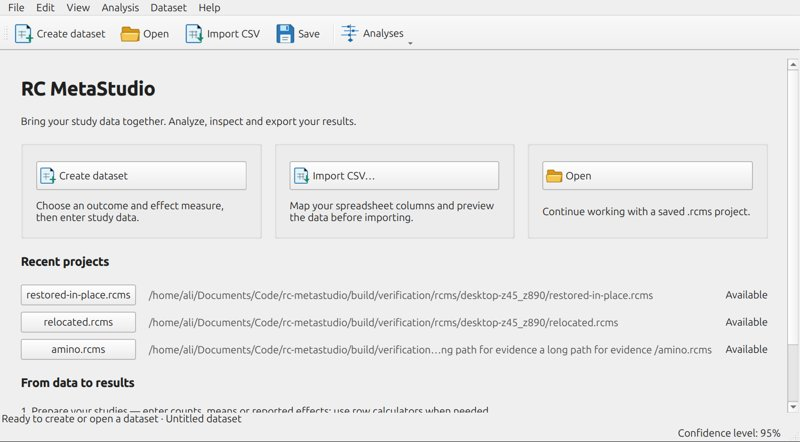
20261015T212712Z-cce44bd2-review1-design-06-0-review1-start-light.png 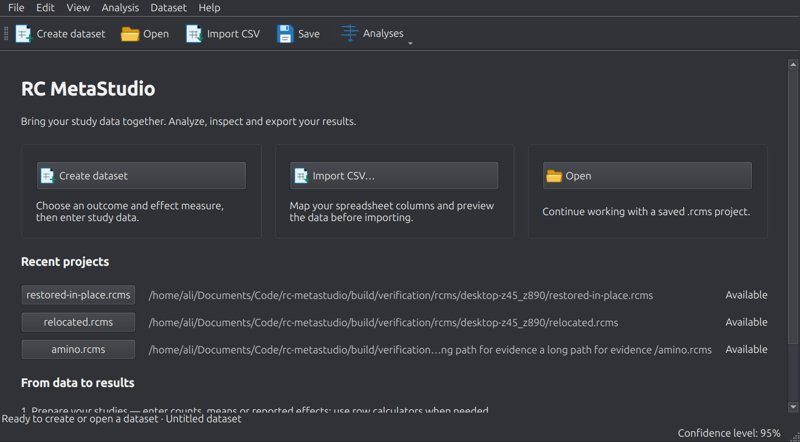
20261015T212712Z-cce44bd2-review1-design-07-0-review1-start-dark.png 20261015T212712Z-cce44bd2-review1-design-08-0-review1-start-wizard-new_dataset.png 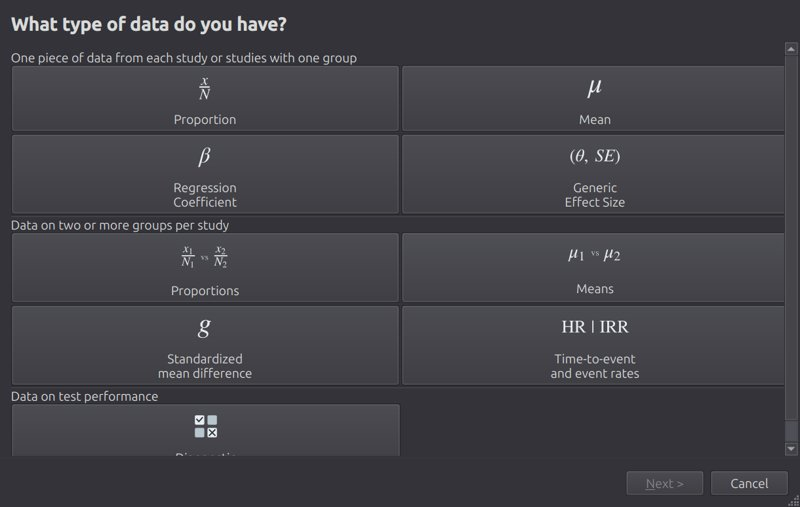
20261015T212712Z-cce44bd2-review1-design-09-0-review1-start-wizard-csv_import.png 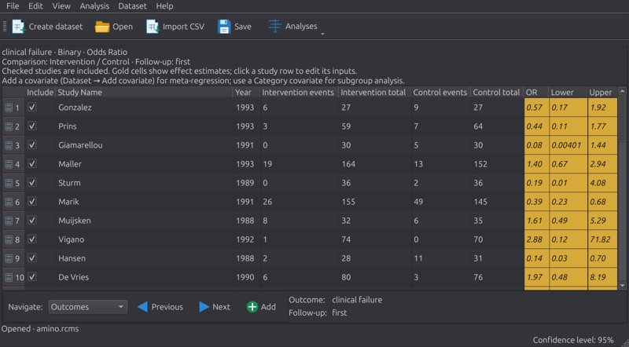
20261015T212712Z-cce44bd2-review1-design-10-0-round5-grid-cues.png 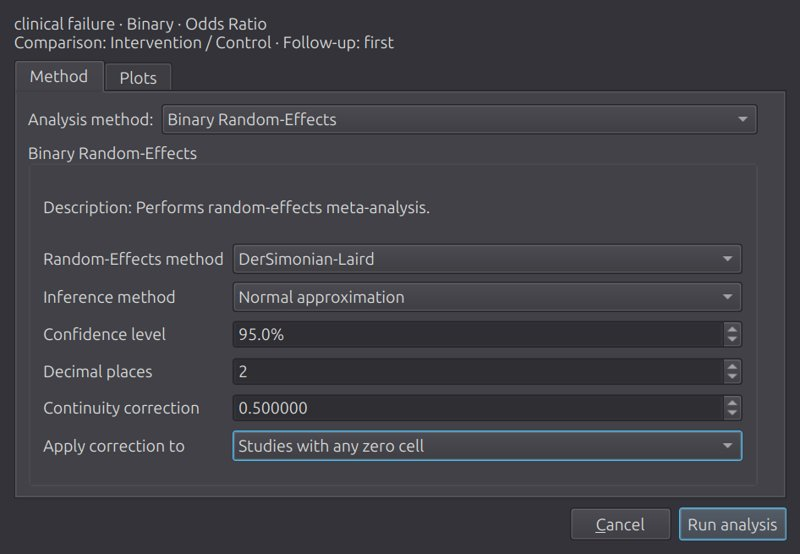
20261015T212712Z-cce44bd2-review1-design-16-0-round5-keyboard-setup-page-0.png 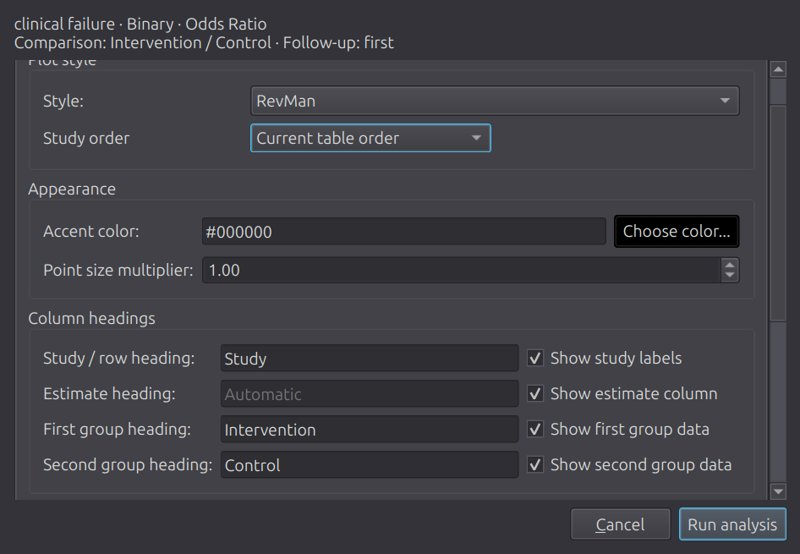
20261015T212712Z-cce44bd2-review1-design-17-0-round5-keyboard-setup-page-1.png 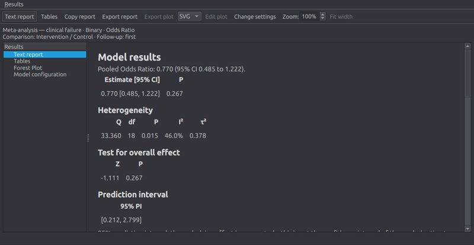
20261015T212712Z-cce44bd2-review1-design-21-0-review1-report-top.png 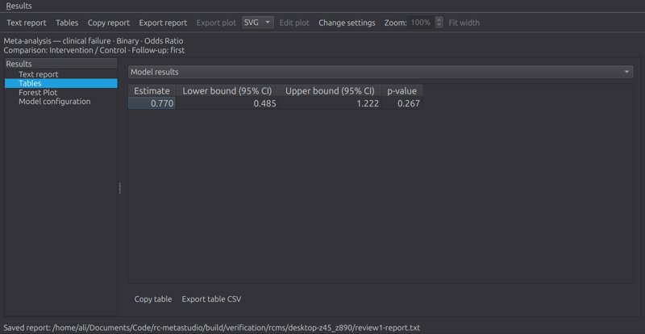
20261015T212712Z-cce44bd2-review1-design-23-0-review1-report-tables.png 20261015T212753Z-85776c9f-review1-design 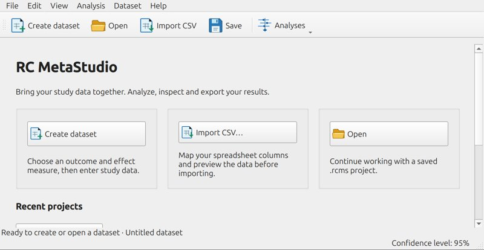
20261015T212753Z-85776c9f-review1-design-06-0-review1-start-light.png 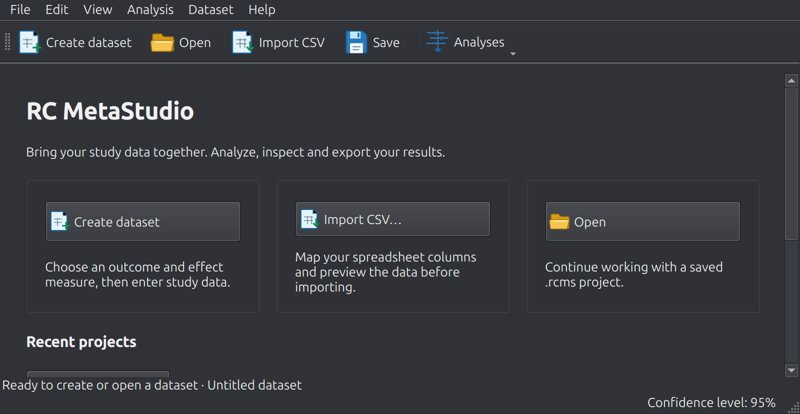
20261015T212753Z-85776c9f-review1-design-07-0-review1-start-dark.png 20261015T212753Z-85776c9f-review1-design-08-0-review1-start-wizard-new_dataset.png 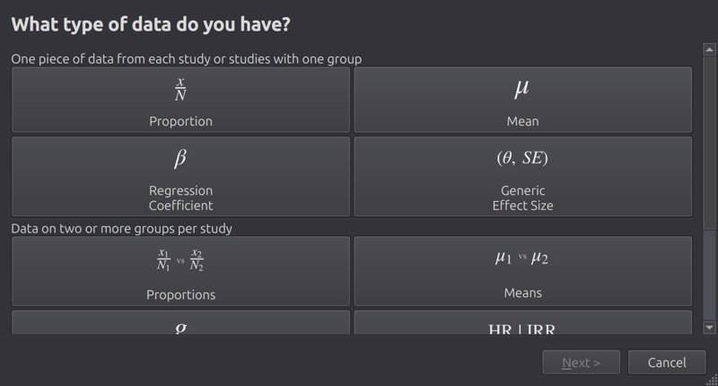
20261015T212753Z-85776c9f-review1-design-09-0-review1-start-wizard-csv_import.png 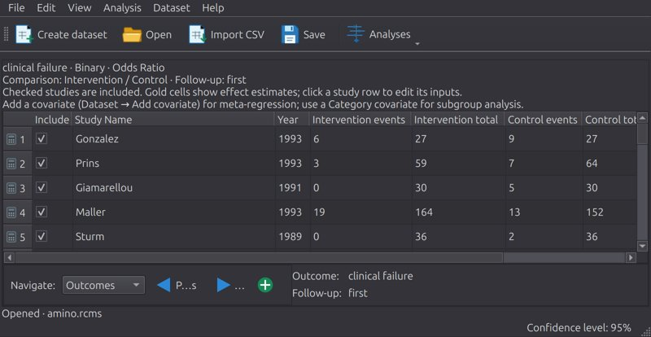
20261015T212753Z-85776c9f-review1-design-10-0-round5-grid-cues.png 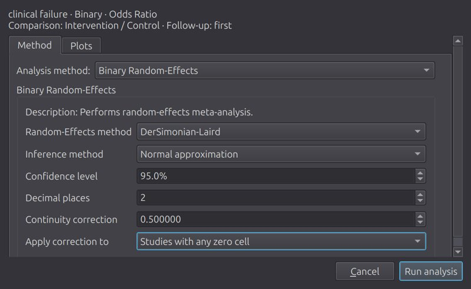
20261015T212753Z-85776c9f-review1-design-16-0-round5-keyboard-setup-page-0.png 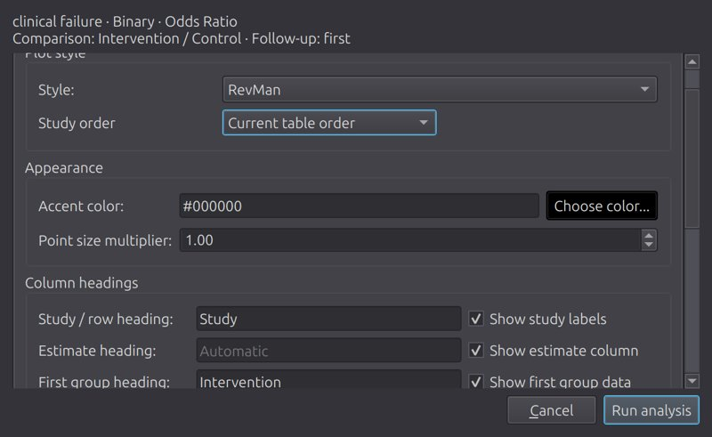
20261015T212753Z-85776c9f-review1-design-17-0-round5-keyboard-setup-page-1.png 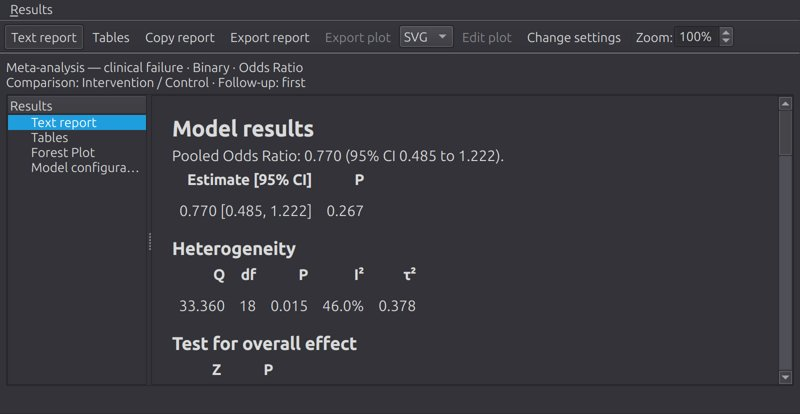
20261015T212753Z-85776c9f-review1-design-21-0-review1-report-top.png 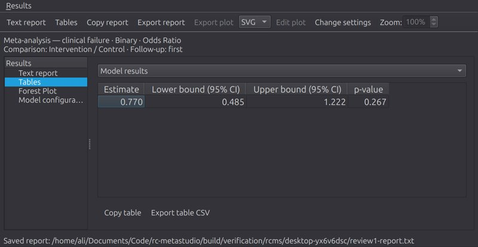
20261015T212753Z-85776c9f-review1-design-23-0-review1-report-tables.png EDITOR-INVENTORY editor-000-forest-top.png 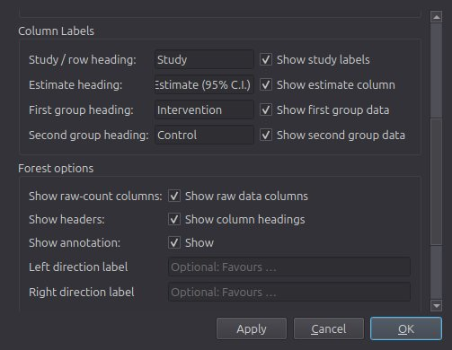
editor-001-forest-scroll-252.png editor-002-forest-scroll-395.png 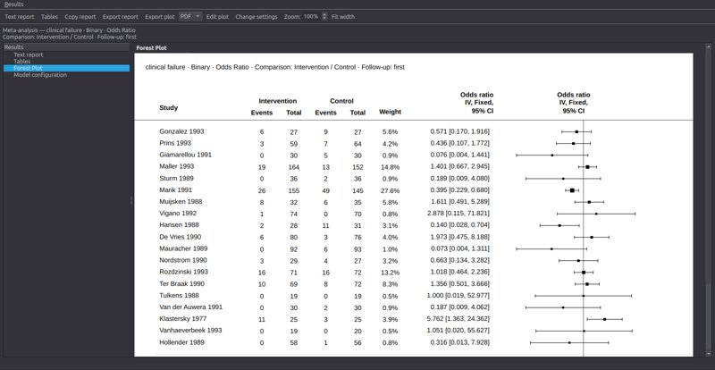
editor-003-forest-figure-top.png 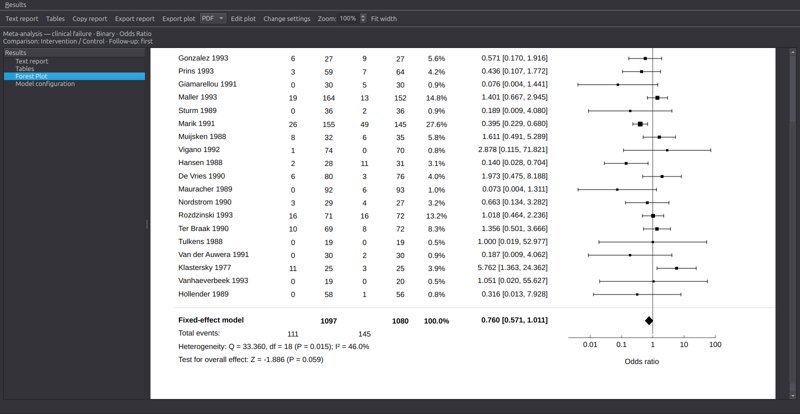
editor-004-forest-figure-lower.png editor-005-cumulative_forest-top.png 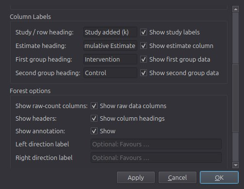
editor-006-cumulative_forest-scroll-252.png 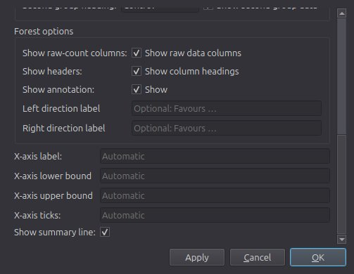
editor-007-cumulative_forest-scroll-395.png 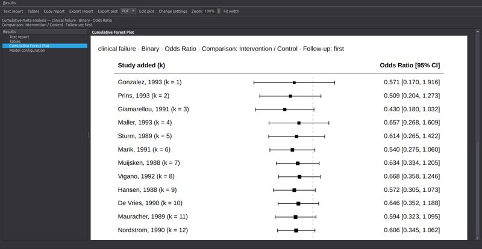
editor-008-cumulative_forest-figure-top.png 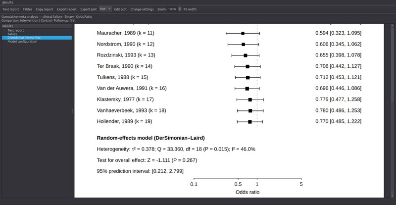
editor-009-cumulative_forest-figure-lower.png 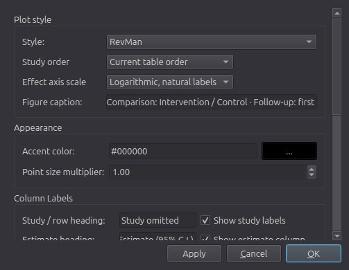
editor-010-leave_one_out_forest-top.png editor-011-leave_one_out_forest-scroll-252.png editor-012-leave_one_out_forest-scroll-395.png 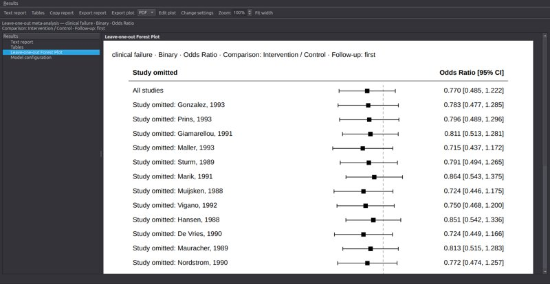
editor-013-leave_one_out_forest-figure-top.png editor-014-leave_one_out_forest-figure-lower.png editor-015-subgroup_forest-top.png editor-016-subgroup_forest-scroll-252.png editor-017-subgroup_forest-scroll-395.png editor-018-subgroup_forest-figure-top.png editor-019-subgroup_forest-figure-lower.png editor-020-regression-top.png editor-021-regression-scroll-133.png editor-022-regression-figure-top.png editor-023-regression-figure-lower.png editor-024-sroc-top.png editor-025-sroc-scroll-252.png editor-026-sroc-scroll-504.png editor-027-sroc-scroll-555.png editor-028-sroc-figure-top.png editor-029-sroc-figure-lower.png editor-030-sroc-Default-applied.png editor-031-sroc-Default-result-top.png editor-032-sroc-Default-result-bottom.png editor-033-sroc-RevMan-applied.png editor-034-sroc-RevMan-result-top.png editor-035-sroc-RevMan-result-bottom.png editor-036-sroc-BMJ-applied.png editor-037-sroc-BMJ-result-top.png editor-038-sroc-BMJ-result-bottom.png editor-039-coefficient-top.png editor-040-coefficient-figure-top.png editor-041-coefficient-figure-lower.png editor-042-funnel-top.png editor-043-funnel-scroll-241.png editor-044-funnel-scroll-482.png editor-045-funnel-scroll-490.png editor-046-funnel-figure-top.png editor-047-funnel-figure-lower.png editor-048-contour_funnel-top.png editor-049-contour_funnel-scroll-241.png editor-050-contour_funnel-scroll-482.png editor-051-contour_funnel-scroll-490.png editor-052-contour_funnel-figure-top.png editor-053-contour_funnel-figure-lower.png editor-054-trimfill_funnel-top.png editor-055-trimfill_funnel-scroll-241.png editor-056-trimfill_funnel-scroll-475.png editor-057-trimfill_funnel-figure-top.png editor-058-trimfill_funnel-figure-lower.png editor-059-deeks_funnel-top.png editor-060-deeks_funnel-scroll-241.png editor-061-deeks_funnel-scroll-482.png editor-062-deeks_funnel-scroll-490.png editor-063-deeks_funnel-figure-top.png editor-064-deeks_funnel-figure-lower.png GUARD-KEYBOARD guard-open-no.png guard-open-no-result.png guard-open-yes.png guard-open-yes-reopened.png guard-save-as-cancel.png guard-save-as-cancel-preserved.png keyboard-toolbar-focus.png keyboard-analysis-menu.png keyboard-analysis-setup.png keyboard-report-copied-exported.png MATRIX-diagnostic-bmj matrix-diagnostic-standard-figure-bmj.png matrix-diagnostic-standard-figure-1-bmj.png matrix-diagnostic-cumulative-figure-bmj.png matrix-diagnostic-cumulative-figure-1-bmj.png matrix-diagnostic-leave-one-out-figure-bmj.png matrix-diagnostic-leave-one-out-figure-1-bmj.png matrix-diagnostic-subgroup-figure-bmj.png matrix-diagnostic-subgroup-figure-1-bmj.png matrix-diagnostic-meta-regression-figure-bmj.png matrix-diagnostic-meta-regression-figure-1-bmj.png MATRIX-diagnostic-revman matrix-diagnostic-standard-figure-revman.png matrix-diagnostic-standard-figure-1-revman.png matrix-diagnostic-cumulative-figure-revman.png matrix-diagnostic-cumulative-figure-1-revman.png matrix-diagnostic-leave-one-out-figure-revman.png matrix-diagnostic-leave-one-out-figure-1-revman.png matrix-diagnostic-subgroup-figure-revman.png matrix-diagnostic-subgroup-figure-1-revman.png matrix-diagnostic-meta-regression-figure-revman.png matrix-diagnostic-meta-regression-figure-1-revman.png MATRIX-diagnostic matrix-diagnostic-standard-report.png matrix-diagnostic-standard-figure.png matrix-diagnostic-standard-figure-1.png matrix-diagnostic-cumulative-report.png matrix-diagnostic-cumulative-figure.png matrix-diagnostic-cumulative-figure-1.png matrix-diagnostic-leave-one-out-report.png matrix-diagnostic-leave-one-out-figure.png matrix-diagnostic-leave-one-out-figure-1.png matrix-diagnostic-subgroup-report.png matrix-diagnostic-subgroup-figure.png matrix-diagnostic-subgroup-figure-1.png matrix-diagnostic-meta-regression-report.png matrix-diagnostic-meta-regression-figure.png matrix-diagnostic-meta-regression-figure-1.png MATRIX-generic-effect-bmj matrix-generic-effect-standard-figure-bmj.png matrix-generic-effect-cumulative-figure-bmj.png matrix-generic-effect-leave-one-out-figure-bmj.png matrix-generic-effect-subgroup-figure-bmj.png matrix-generic-effect-meta-regression-figure-bmj.png MATRIX-generic-effect-revman matrix-generic-effect-standard-figure-revman.png matrix-generic-effect-cumulative-figure-revman.png matrix-generic-effect-leave-one-out-figure-revman.png matrix-generic-effect-subgroup-figure-revman.png matrix-generic-effect-meta-regression-figure-revman.png MATRIX-generic-effect matrix-generic-effect-standard-report.png matrix-generic-effect-standard-figure.png matrix-generic-effect-cumulative-report.png matrix-generic-effect-cumulative-figure.png matrix-generic-effect-leave-one-out-report.png matrix-generic-effect-leave-one-out-figure.png matrix-generic-effect-subgroup-report.png matrix-generic-effect-subgroup-figure.png matrix-generic-effect-meta-regression-report.png matrix-generic-effect-meta-regression-figure.png MATRIX-hr-bmj-recovered matrix-hr-standard-report-bmj.png matrix-hr-standard-report-bottom-bmj.png matrix-hr-standard-figure-bmj.png matrix-hr-standard-figure-bottom-bmj.png matrix-hr-cumulative-report-bmj.png matrix-hr-cumulative-report-bottom-bmj.png matrix-hr-cumulative-figure-bmj.png matrix-hr-cumulative-figure-bottom-bmj.png matrix-hr-leave-one-out-report-bmj--exposure-recovery.png matrix-hr-leave-one-out-report-bottom-bmj--exposure-recovery.png matrix-hr-leave-one-out-figure-bmj--exposure-recovery.png matrix-hr-leave-one-out-figure-bottom-bmj--exposure-recovery.png matrix-hr-subgroup-report-bmj--exposure-recovery.png matrix-hr-subgroup-report-bottom-bmj--exposure-recovery.png matrix-hr-subgroup-figure-bmj--exposure-recovery.png matrix-hr-subgroup-figure-bottom-bmj--exposure-recovery.png matrix-hr-meta-regression-report-bmj--exposure-recovery.png matrix-hr-meta-regression-report-bottom-bmj--exposure-recovery.png matrix-hr-meta-regression-report-exponentiated-bmj--exposure-recovery.png matrix-hr-meta-regression-figure-bmj--exposure-recovery.png matrix-hr-meta-regression-figure-bottom-bmj--exposure-recovery.png MATRIX-hr-recovered matrix-hr-standard-report.png matrix-hr-standard-report-bottom.png matrix-hr-standard-figure.png matrix-hr-standard-figure-bottom.png matrix-hr-cumulative-report.png matrix-hr-cumulative-report-bottom.png matrix-hr-cumulative-figure.png matrix-hr-cumulative-figure-bottom.png matrix-hr-leave-one-out-report.png matrix-hr-leave-one-out-report-bottom.png matrix-hr-leave-one-out-figure.png matrix-hr-leave-one-out-figure-bottom.png matrix-hr-subgroup-report.png matrix-hr-subgroup-report-bottom.png matrix-hr-subgroup-figure.png matrix-hr-subgroup-figure-bottom.png matrix-hr-meta-regression-report--wording-recovery.png matrix-hr-meta-regression-report-bottom--wording-recovery.png matrix-hr-meta-regression-report-exponentiated--wording-recovery.png matrix-hr-meta-regression-figure--wording-recovery.png matrix-hr-meta-regression-figure-bottom--wording-recovery.png MATRIX-hr-revman matrix-hr-standard-figure-revman.png matrix-hr-cumulative-figure-revman.png matrix-hr-leave-one-out-figure-revman.png matrix-hr-subgroup-figure-revman.png matrix-hr-meta-regression-figure-revman.png MATRIX-irr-bmj matrix-irr-standard-figure-bmj.png matrix-irr-cumulative-figure-bmj.png matrix-irr-leave-one-out-figure-bmj.png matrix-irr-subgroup-figure-bmj.png matrix-irr-meta-regression-figure-bmj.png MATRIX-irr-recovered matrix-irr-standard-report.png matrix-irr-standard-report-bottom.png matrix-irr-standard-figure.png matrix-irr-cumulative-report.png matrix-irr-cumulative-figure.png matrix-irr-cumulative-figure-bottom.png matrix-irr-leave-one-out-report.png matrix-irr-leave-one-out-figure.png matrix-irr-leave-one-out-figure-bottom.png matrix-irr-subgroup-report.png matrix-irr-subgroup-report-bottom.png matrix-irr-subgroup-figure.png matrix-irr-subgroup-figure-bottom.png matrix-irr-meta-regression-report--wording-recovery.png matrix-irr-meta-regression-report-bottom--wording-recovery.png matrix-irr-meta-regression-report-exponentiated--wording-recovery.png matrix-irr-meta-regression-figure--wording-recovery.png matrix-irr-meta-regression-figure-bottom--wording-recovery.png MATRIX-irr-revman matrix-irr-standard-figure-revman.png matrix-irr-cumulative-figure-revman.png matrix-irr-leave-one-out-figure-revman.png matrix-irr-subgroup-figure-revman.png matrix-irr-meta-regression-figure-revman.png MATRIX-onearm-mean-bmj matrix-onearm-mean-standard-figure-bmj.png matrix-onearm-mean-cumulative-figure-bmj.png matrix-onearm-mean-leave-one-out-figure-bmj.png matrix-onearm-mean-subgroup-figure-bmj.png matrix-onearm-mean-meta-regression-figure-bmj.png MATRIX-onearm-mean-revman matrix-onearm-mean-standard-figure-revman.png matrix-onearm-mean-cumulative-figure-revman.png matrix-onearm-mean-leave-one-out-figure-revman.png matrix-onearm-mean-subgroup-figure-revman.png matrix-onearm-mean-meta-regression-figure-revman.png MATRIX-onearm-mean matrix-onearm-mean-standard-report.png matrix-onearm-mean-standard-figure.png matrix-onearm-mean-cumulative-report.png matrix-onearm-mean-cumulative-figure.png matrix-onearm-mean-leave-one-out-report.png matrix-onearm-mean-leave-one-out-figure.png matrix-onearm-mean-subgroup-report.png matrix-onearm-mean-subgroup-figure.png matrix-onearm-mean-meta-regression-report.png matrix-onearm-mean-meta-regression-figure.png MATRIX-onearm-proportion-bmj matrix-onearm-proportion-standard-figure-bmj.png matrix-onearm-proportion-cumulative-figure-bmj.png matrix-onearm-proportion-leave-one-out-figure-bmj.png matrix-onearm-proportion-subgroup-figure-bmj.png matrix-onearm-proportion-meta-regression-figure-bmj.png MATRIX-onearm-proportion-revman matrix-onearm-proportion-standard-figure-revman.png matrix-onearm-proportion-cumulative-figure-revman.png matrix-onearm-proportion-leave-one-out-figure-revman.png matrix-onearm-proportion-subgroup-figure-revman.png matrix-onearm-proportion-meta-regression-figure-revman.png MATRIX-onearm-proportion matrix-onearm-proportion-standard-report.png matrix-onearm-proportion-standard-figure.png matrix-onearm-proportion-cumulative-report.png matrix-onearm-proportion-cumulative-figure.png matrix-onearm-proportion-leave-one-out-report.png matrix-onearm-proportion-leave-one-out-figure.png matrix-onearm-proportion-subgroup-report.png matrix-onearm-proportion-subgroup-figure.png matrix-onearm-proportion-meta-regression-report.png matrix-onearm-proportion-meta-regression-figure.png MATRIX-reg-coef-bmj matrix-reg-coef-standard-figure-bmj.png matrix-reg-coef-cumulative-figure-bmj.png matrix-reg-coef-leave-one-out-figure-bmj.png matrix-reg-coef-subgroup-figure-bmj.png matrix-reg-coef-meta-regression-figure-bmj.png MATRIX-reg-coef-revman matrix-reg-coef-standard-figure-revman.png matrix-reg-coef-cumulative-figure-revman.png matrix-reg-coef-leave-one-out-figure-revman.png matrix-reg-coef-subgroup-figure-revman.png matrix-reg-coef-meta-regression-figure-revman.png MATRIX-reg-coef matrix-reg-coef-standard-report.png matrix-reg-coef-standard-figure.png matrix-reg-coef-cumulative-report.png matrix-reg-coef-cumulative-figure.png matrix-reg-coef-leave-one-out-report.png matrix-reg-coef-leave-one-out-figure.png matrix-reg-coef-subgroup-report.png matrix-reg-coef-subgroup-figure.png matrix-reg-coef-meta-regression-report.png matrix-reg-coef-meta-regression-figure.png MATRIX-samples sample-amino-grid.png sample-amino-report.png sample-amino-figure.png sample-BCG-grid.png sample-BCG-report.png sample-BCG-figure.png sample-continuous-grid.png sample-continuous-report.png sample-continuous-figure.png sample-meantime-grid.png sample-meantime-report.png sample-meantime-figure.png sample-lymph-grid.png sample-lymph-report.png sample-lymph-figure.png sample-Pignon2000-HR-grid.png sample-Pignon2000-HR-report.png sample-Pignon2000-HR-figure.png sample-NielWeise2008-IRR-grid.png sample-NielWeise2008-IRR-report.png sample-NielWeise2008-IRR-figure.png MATRIX-twoarm-mean-bmj matrix-twoarm-mean-standard-figure-bmj.png matrix-twoarm-mean-cumulative-figure-bmj.png matrix-twoarm-mean-leave-one-out-figure-bmj.png matrix-twoarm-mean-subgroup-figure-bmj.png matrix-twoarm-mean-meta-regression-figure-bmj.png MATRIX-twoarm-mean-revman matrix-twoarm-mean-standard-figure-revman.png matrix-twoarm-mean-cumulative-figure-revman.png matrix-twoarm-mean-leave-one-out-figure-revman.png matrix-twoarm-mean-subgroup-figure-revman.png matrix-twoarm-mean-meta-regression-figure-revman.png MATRIX-twoarm-mean matrix-twoarm-mean-standard-report.png matrix-twoarm-mean-standard-figure.png matrix-twoarm-mean-cumulative-report.png matrix-twoarm-mean-cumulative-figure.png matrix-twoarm-mean-leave-one-out-report.png matrix-twoarm-mean-leave-one-out-figure.png matrix-twoarm-mean-subgroup-report.png matrix-twoarm-mean-subgroup-figure.png matrix-twoarm-mean-meta-regression-report.png matrix-twoarm-mean-meta-regression-figure.png MATRIX-twoarm-proportion-bmj matrix-twoarm-proportion-standard-figure-bmj.png matrix-twoarm-proportion-cumulative-figure-bmj.png matrix-twoarm-proportion-leave-one-out-figure-bmj.png matrix-twoarm-proportion-subgroup-figure-bmj.png matrix-twoarm-proportion-meta-regression-figure-bmj.png MATRIX-twoarm-proportion-revman matrix-twoarm-proportion-standard-figure-revman.png matrix-twoarm-proportion-cumulative-figure-revman.png matrix-twoarm-proportion-leave-one-out-figure-revman.png matrix-twoarm-proportion-subgroup-figure-revman.png matrix-twoarm-proportion-meta-regression-figure-revman.png MATRIX-twoarm-proportion matrix-twoarm-proportion-standard-report.png matrix-twoarm-proportion-standard-figure.png matrix-twoarm-proportion-cumulative-report.png matrix-twoarm-proportion-cumulative-figure.png matrix-twoarm-proportion-leave-one-out-report.png matrix-twoarm-proportion-leave-one-out-figure.png matrix-twoarm-proportion-subgroup-report.png matrix-twoarm-proportion-subgroup-figure.png matrix-twoarm-proportion-meta-regression-report.png matrix-twoarm-proportion-meta-regression-figure.png MATRIX-twoarm-smd-bmj matrix-twoarm-smd-standard-figure-bmj.png matrix-twoarm-smd-cumulative-figure-bmj.png matrix-twoarm-smd-leave-one-out-figure-bmj.png matrix-twoarm-smd-subgroup-figure-bmj.png matrix-twoarm-smd-meta-regression-figure-bmj.png MATRIX-twoarm-smd-revman matrix-twoarm-smd-standard-figure-revman.png matrix-twoarm-smd-cumulative-figure-revman.png matrix-twoarm-smd-leave-one-out-figure-revman.png matrix-twoarm-smd-subgroup-figure-revman.png matrix-twoarm-smd-meta-regression-figure-revman.png MATRIX-twoarm-smd matrix-twoarm-smd-standard-report.png matrix-twoarm-smd-standard-figure.png matrix-twoarm-smd-cumulative-report.png matrix-twoarm-smd-cumulative-figure.png matrix-twoarm-smd-leave-one-out-report.png matrix-twoarm-smd-leave-one-out-figure.png matrix-twoarm-smd-subgroup-report.png matrix-twoarm-smd-subgroup-figure.png matrix-twoarm-smd-meta-regression-report.png matrix-twoarm-smd-meta-regression-figure.png OPTIONS-REMAINDER options-139-diagnostic-header-0.png options-140-diagnostic-header-1.png options-141-diagnostic-header-2.png options-142-diagnostic-header-3.png options-143-diagnostic-header-4.png options-144-diagnostic-header-5.png options-145-diagnostic-header-6.png options-146-diagnostic-header-7.png options-147-diagnostic-header-8.png options-148-diagnostic-header-9.png options-149-diagnostic-header-10.png options-150-diagnostic-header-11.png options-151-diagnostic-header-12.png options-152-diagnostic-header-13.png options-153-diagnostic-header-14.png options-154-diagnostic-study-context.png options-155-diagnostic-metric-selection.png options-156-diagnostic-method-0.png options-157-diagnostic-method-1.png options-158-diagnostic-method-2.png options-159-diagnostic-tab-0-top.png options-160-diagnostic-tab-1-top.png options-161-diagnostic-tab-1-scroll-156.png options-162-diagnostic-tab-1-scroll-313.png options-163-hr-header-0.png options-164-hr-header-1.png options-165-hr-header-2.png options-166-hr-header-3.png options-167-hr-header-4.png options-168-hr-header-5.png options-169-hr-header-6.png options-170-hr-header-7.png options-171-hr-header-8.png options-172-hr-header-9.png options-173-hr-header-10.png options-174-hr-header-11.png options-175-hr-header-12.png options-176-hr-header-13.png options-177-hr-header-14.png options-178-hr-study-context.png options-179-hr-method-0.png options-180-hr-method-1.png options-181-hr-tab-0-top.png options-182-hr-tab-1-top.png options-183-hr-tab-1-scroll-156.png options-184-hr-tab-1-scroll-313.png options-185-irr-header-0.png options-186-irr-header-1.png options-187-irr-header-2.png options-188-irr-header-3.png options-189-irr-header-4.png options-190-irr-header-5.png options-191-irr-header-6.png options-192-irr-header-7.png options-193-irr-header-8.png options-194-irr-header-9.png options-195-irr-header-10.png options-196-irr-header-11.png options-197-irr-header-12.png options-198-irr-header-13.png options-199-irr-header-14.png options-200-irr-header-15.png options-201-irr-header-16.png options-202-irr-study-context.png options-203-irr-method-0.png options-204-irr-method-1.png options-205-irr-method-2.png options-206-irr-tab-0-top.png options-207-irr-tab-1-top.png options-208-irr-tab-1-scroll-140.png options-209-irr-tab-1-scroll-281.png options-210-small-study.png OPTIONS options-000-onearm-proportion-header-0.png options-001-onearm-proportion-header-1.png options-002-onearm-proportion-header-2.png options-003-onearm-proportion-header-3.png options-004-onearm-proportion-header-4.png options-005-onearm-proportion-header-5.png options-006-onearm-proportion-header-6.png options-007-onearm-proportion-header-7.png options-008-onearm-proportion-header-8.png options-009-onearm-proportion-header-9.png options-010-onearm-proportion-header-10.png options-011-onearm-proportion-header-11.png options-012-onearm-proportion-study-context.png options-013-onearm-proportion-method-0.png options-014-onearm-proportion-method-1.png options-015-onearm-proportion-tab-0-top.png options-016-onearm-proportion-tab-1-top.png options-017-onearm-proportion-tab-1-scroll-151.png options-018-onearm-proportion-tab-1-scroll-302.png options-019-onearm-mean-header-0.png options-020-onearm-mean-header-1.png options-021-onearm-mean-header-2.png options-022-onearm-mean-header-3.png options-023-onearm-mean-header-4.png options-024-onearm-mean-header-5.png options-025-onearm-mean-header-6.png options-026-onearm-mean-header-7.png options-027-onearm-mean-header-8.png options-028-onearm-mean-header-9.png options-029-onearm-mean-header-10.png options-030-onearm-mean-header-11.png options-031-onearm-mean-header-12.png options-032-onearm-mean-header-13.png options-033-onearm-mean-study-context.png options-034-onearm-mean-method-0.png options-035-onearm-mean-method-1.png options-036-onearm-mean-tab-0-top.png options-037-onearm-mean-tab-1-top.png options-038-onearm-mean-tab-1-scroll-156.png options-039-onearm-mean-tab-1-scroll-313.png options-040-reg-coef-header-0.png options-041-reg-coef-header-1.png options-042-reg-coef-header-2.png options-043-reg-coef-header-3.png options-044-reg-coef-header-4.png options-045-reg-coef-header-5.png options-046-reg-coef-header-6.png options-047-reg-coef-header-7.png options-048-reg-coef-header-8.png options-049-reg-coef-header-9.png options-050-reg-coef-header-10.png options-051-reg-coef-header-11.png options-052-reg-coef-header-12.png options-053-reg-coef-header-13.png options-054-reg-coef-study-context.png options-055-reg-coef-method-0.png options-056-reg-coef-method-1.png options-057-reg-coef-tab-0-top.png options-058-reg-coef-tab-1-top.png options-059-reg-coef-tab-1-scroll-156.png options-060-reg-coef-tab-1-scroll-313.png options-061-generic-effect-header-0.png options-062-generic-effect-header-1.png options-063-generic-effect-header-2.png options-064-generic-effect-header-3.png options-065-generic-effect-header-4.png options-066-generic-effect-header-5.png options-067-generic-effect-header-6.png options-068-generic-effect-study-context.png options-069-generic-effect-method-0.png options-070-generic-effect-method-1.png options-071-generic-effect-tab-0-top.png options-072-generic-effect-tab-1-top.png options-073-generic-effect-tab-1-scroll-156.png options-074-generic-effect-tab-1-scroll-313.png options-075-twoarm-proportion-header-0.png options-076-twoarm-proportion-header-1.png options-077-twoarm-proportion-header-2.png options-078-twoarm-proportion-header-3.png options-079-twoarm-proportion-header-4.png options-080-twoarm-proportion-header-5.png options-081-twoarm-proportion-header-6.png options-082-twoarm-proportion-header-7.png options-083-twoarm-proportion-header-8.png options-084-twoarm-proportion-header-9.png options-085-twoarm-proportion-header-10.png options-086-twoarm-proportion-header-11.png options-087-twoarm-proportion-study-context.png options-088-twoarm-proportion-method-0.png options-089-twoarm-proportion-method-1.png options-090-twoarm-proportion-method-2.png options-091-twoarm-proportion-method-3.png options-092-twoarm-proportion-tab-0-top.png options-093-twoarm-proportion-tab-1-top.png options-094-twoarm-proportion-tab-1-scroll-151.png options-095-twoarm-proportion-tab-1-scroll-302.png options-096-twoarm-mean-header-0.png options-097-twoarm-mean-header-1.png options-098-twoarm-mean-header-2.png options-099-twoarm-mean-header-3.png options-100-twoarm-mean-header-4.png options-101-twoarm-mean-header-5.png options-102-twoarm-mean-header-6.png options-103-twoarm-mean-header-7.png options-104-twoarm-mean-header-8.png options-105-twoarm-mean-header-9.png options-106-twoarm-mean-header-10.png options-107-twoarm-mean-header-11.png options-108-twoarm-mean-header-12.png options-109-twoarm-mean-header-13.png options-110-twoarm-mean-study-context.png options-111-twoarm-mean-method-0.png options-112-twoarm-mean-method-1.png options-113-twoarm-mean-tab-0-top.png options-114-twoarm-mean-tab-1-top.png options-115-twoarm-mean-tab-1-scroll-156.png options-116-twoarm-mean-tab-1-scroll-313.png options-117-twoarm-smd-header-0.png options-118-twoarm-smd-header-1.png options-119-twoarm-smd-header-2.png options-120-twoarm-smd-header-3.png options-121-twoarm-smd-header-4.png options-122-twoarm-smd-header-5.png options-123-twoarm-smd-header-6.png options-124-twoarm-smd-header-7.png options-125-twoarm-smd-header-8.png options-126-twoarm-smd-header-9.png options-127-twoarm-smd-header-10.png options-128-twoarm-smd-header-11.png options-129-twoarm-smd-header-12.png options-130-twoarm-smd-header-13.png options-131-twoarm-smd-study-context.png options-132-twoarm-smd-method-0.png options-133-twoarm-smd-method-1.png options-134-twoarm-smd-tab-0-top.png options-135-twoarm-smd-tab-1-top.png options-136-twoarm-smd-tab-1-scroll-156.png options-137-twoarm-smd-tab-1-scroll-313.png options-138-small-study.png R6-06 R6-06-171-0-round5-arm-wizard.png SHELL shell-empty.png shell-startup-normal.png shell-startup-full-screen.png shell-launcher.png shell-types.png shell-generic-metric.png shell-empty-outcome.png shell-grid.png shell-dirty-open-prompt.png shell-save-recent-reopened.png menu-0.png menu-1.png menu-2.png menu-3.png menu-4.png menu-5.png menu-6.png menu-7.png menu-8.png menu-9.png shell-structure.png shell-studies.png shell-covariates.png shell-add-covariate.png shell-duplicate-covariate.png shell-confidence.png shell-about.png shell-quick-start.png shell-import-types.png shell-csv-entry.png shell-template-native-picker.png shell-template-saved.png shell-exported-report-editor.png TOOLBAR-RECOVERY toolbar-00.png toolbar-01.png toolbar-02.png toolbar-03.png analysis-diagnostic-joint analysis-diagnostic-joint-03-0-diagnostic-metrics.png analysis-diagnostic-joint-04-0-matrix-configured.png analysis-diagnostic-joint-05-0-matrix-results.png analysis-diagnostic-joint-05-0-matrix-results-report.png analysis-diagnostic-joint-05-0-matrix-results-table.png analysis-diagnostic-joint-05-0-matrix-results-figure.png analysis-diagnostic-joint-05-0-matrix-results-bottom.png analysis-diagnostic-joint-06-0-clinical-report.png audit-round3-bubble-metrics audit-round3-bubble-metrics-11-0-round5-bubble-bounds.png audit-round3-bubble-metrics-21-0-round5-bubble-bounds.png audit-round3-bubble-metrics-31-0-round5-bubble-bounds.png audit-round3-bubble-metrics-41-0-round5-bubble-bounds.png audit-round3-bubble-metrics-51-0-round5-bubble-bounds.png audit-round3-bubble-metrics-61-0-round5-bubble-bounds.png audit-round3-bubble-metrics-71-0-round5-bubble-bounds.png audit-round3-bubble-metrics-81-0-round5-bubble-bounds.png audit-round3-bubble-metrics-91-0-round5-bubble-bounds.png audit-round3-bubble-metrics-101-0-round5-bubble-bounds.png audit-round3-bubble-metrics-111-0-round5-bubble-bounds.png audit-round3-bubble-metrics-121-0-round5-bubble-bounds.png audit-round3-bubble-metrics-131-0-round5-bubble-bounds.png audit-round3-bubble-metrics-141-0-round5-bubble-bounds.png audit-round3-bubble-metrics-151-0-round5-bubble-bounds.png audit-round3-bubble-metrics-161-0-round5-bubble-bounds.png audit-round3-bubble-metrics-164-0-round5-keyboard-setup-page-0.png audit-round3-bubble-metrics-165-0-round5-keyboard-setup-page-1.png audit-round3-bubble-metrics-166-0-round5-keyboard-setup-page-2.png audit-round3-bubble-metrics-168-0-round5-bubble-bounds.png audit-round3-bubble-metrics-171-0-round5-keyboard-setup-page-0.png audit-round3-bubble-metrics-172-0-round5-keyboard-setup-page-1.png audit-round3-bubble-metrics-173-0-round5-keyboard-setup-page-2.png audit-round3-bubble-metrics-175-0-round5-bubble-bounds.png audit-round3-presentation-diagnostic audit-round3-presentation-diagnostic-16-0-round4-annotations.png audit-round3-presentation-diagnostic-17-0-round4-annotations-bottom.png audit-round3-presentation-diagnostic-22-0-round4-annotations.png audit-round3-presentation-diagnostic-23-0-round4-annotations-bottom.png audit-round3-presentation-diagnostic-38-0-round4-annotations.png audit-round3-presentation-diagnostic-39-0-round4-annotations-bottom.png audit-round3-presentation-diagnostic-44-0-round4-annotations.png audit-round3-presentation-diagnostic-45-0-round4-annotations-bottom.png audit-round3-presentation-diagnostic-60-0-round4-annotations.png audit-round3-presentation-diagnostic-61-0-round4-annotations-bottom.png audit-round3-presentation-diagnostic-66-0-round4-annotations.png audit-round3-presentation-diagnostic-67-0-round4-annotations-bottom.png audit-round3-presentation-diagnostic-82-0-round4-annotations.png audit-round3-presentation-diagnostic-83-0-round4-annotations-bottom.png audit-round3-presentation-diagnostic-88-0-round4-annotations.png audit-round3-presentation-diagnostic-89-0-round4-annotations-bottom.png audit-round3-presentation-diagnostic-104-0-round4-annotations.png audit-round3-presentation-diagnostic-105-0-round4-annotations-bottom.png audit-round3-presentation-diagnostic-110-0-round4-annotations.png audit-round3-presentation-diagnostic-111-0-round4-annotations-bottom.png audit-round3-presentation-diagnostic-126-0-round4-annotations.png audit-round3-presentation-diagnostic-127-0-round4-annotations-bottom.png audit-round3-presentation-diagnostic-132-0-round4-annotations.png audit-round3-presentation-diagnostic-133-0-round4-annotations-bottom.png audit-round3-presentation-generic-effect audit-round3-presentation-generic-effect-15-0-round4-annotations.png audit-round3-presentation-generic-effect-16-0-round4-annotations-bottom.png audit-round3-presentation-generic-effect-30-0-round4-annotations.png audit-round3-presentation-generic-effect-31-0-round4-annotations-bottom.png audit-round3-presentation-generic-effect-45-0-round4-annotations.png audit-round3-presentation-generic-effect-46-0-round4-annotations-bottom.png audit-round3-presentation-generic-effect-60-0-round4-annotations.png audit-round3-presentation-generic-effect-61-0-round4-annotations-bottom.png audit-round3-presentation-generic-effect-75-0-round4-annotations.png audit-round3-presentation-generic-effect-76-0-round4-annotations-bottom.png audit-round3-presentation-generic-effect-90-0-round4-annotations.png audit-round3-presentation-generic-effect-91-0-round4-annotations-bottom.png audit-round3-presentation-onearm-proportion audit-round3-presentation-onearm-proportion-15-0-round4-annotations.png audit-round3-presentation-onearm-proportion-16-0-round4-annotations-bottom.png audit-round3-presentation-onearm-proportion-30-0-round4-annotations.png audit-round3-presentation-onearm-proportion-31-0-round4-annotations-bottom.png audit-round3-presentation-onearm-proportion-45-0-round4-annotations.png audit-round3-presentation-onearm-proportion-46-0-round4-annotations-bottom.png audit-round3-presentation-onearm-proportion-60-0-round4-annotations.png audit-round3-presentation-onearm-proportion-61-0-round4-annotations-bottom.png audit-round3-presentation-onearm-proportion-75-0-round4-annotations.png audit-round3-presentation-onearm-proportion-76-0-round4-annotations-bottom.png audit-round3-presentation-onearm-proportion-90-0-round4-annotations.png audit-round3-presentation-onearm-proportion-91-0-round4-annotations-bottom.png audit-round3-presentation-reg-coef audit-round3-presentation-reg-coef-15-0-round4-annotations.png audit-round3-presentation-reg-coef-16-0-round4-annotations-bottom.png audit-round3-presentation-reg-coef-30-0-round4-annotations.png audit-round3-presentation-reg-coef-31-0-round4-annotations-bottom.png audit-round3-presentation-reg-coef-45-0-round4-annotations.png audit-round3-presentation-reg-coef-46-0-round4-annotations-bottom.png audit-round3-presentation-reg-coef-60-0-round4-annotations.png audit-round3-presentation-reg-coef-61-0-round4-annotations-bottom.png audit-round3-presentation-reg-coef-75-0-round4-annotations.png audit-round3-presentation-reg-coef-76-0-round4-annotations-bottom.png audit-round3-presentation-reg-coef-90-0-round4-annotations.png audit-round3-presentation-reg-coef-91-0-round4-annotations-bottom.png audit-round3-presentation-sequential audit-round3-presentation-sequential-11-0-round3-sequential-rows.png audit-round3-presentation-sequential-12-0-round3-sequential-bottom.png audit-round3-presentation-sequential-17-0-round3-null-excluded-controls.png audit-round3-presentation-sequential-18-0-round3-null-excluded-rendered.png audit-round3-presentation-sequential-28-0-round3-sequential-rows.png audit-round3-presentation-sequential-29-0-round3-sequential-bottom.png audit-round3-presentation-sequential-34-0-round3-null-excluded-controls.png audit-round3-presentation-sequential-35-0-round3-null-excluded-rendered.png audit-round3-presentation-sequential-45-0-round3-sequential-rows.png audit-round3-presentation-sequential-46-0-round3-sequential-bottom.png audit-round3-presentation-sequential-51-0-round3-null-excluded-controls.png audit-round3-presentation-sequential-52-0-round3-null-excluded-rendered.png audit-round3-presentation-sequential-62-0-round3-sequential-rows.png audit-round3-presentation-sequential-63-0-round3-sequential-bottom.png audit-round3-presentation-sequential-77-0-round3-sequential-rows.png audit-round3-presentation-sequential-78-0-round3-sequential-bottom.png audit-round3-presentation-sequential-92-0-round3-sequential-rows.png audit-round3-presentation-sequential-93-0-round3-sequential-bottom.png audit-round3-presentation-transforms audit-round3-presentation-transforms-17-0-round4-annotations.png audit-round3-presentation-transforms-18-0-round4-annotations-bottom.png audit-round3-presentation-transforms-34-0-round4-annotations.png audit-round3-presentation-transforms-35-0-round4-annotations-bottom.png audit-round3-presentation-transforms-51-0-round4-annotations.png audit-round3-presentation-transforms-52-0-round4-annotations-bottom.png audit-round3-presentation-transforms-68-0-round4-annotations.png audit-round3-presentation-transforms-69-0-round4-annotations-bottom.png audit-round3-presentation-transforms-85-0-round4-annotations.png audit-round3-presentation-transforms-86-0-round4-annotations-bottom.png audit-round3-presentation-transforms-102-0-round4-annotations.png audit-round3-presentation-transforms-103-0-round4-annotations-bottom.png audit-round3-presentation-transforms-119-0-round4-annotations.png audit-round3-presentation-transforms-120-0-round4-annotations-bottom.png audit-round3-presentation-transforms-136-0-round4-annotations.png audit-round3-presentation-transforms-137-0-round4-annotations-bottom.png audit-round3-presentation-transforms-153-0-round4-annotations.png audit-round3-presentation-transforms-154-0-round4-annotations-bottom.png audit-round3-presentation-transforms-170-0-round4-annotations.png audit-round3-presentation-transforms-171-0-round4-annotations-bottom.png audit-round3-presentation-transforms-187-0-round4-annotations.png audit-round3-presentation-transforms-188-0-round4-annotations-bottom.png audit-round3-presentation-transforms-204-0-round4-annotations.png audit-round3-presentation-transforms-205-0-round4-annotations-bottom.png audit-round3-presentation-twoarm-mean audit-round3-presentation-twoarm-mean-15-0-round4-annotations.png audit-round3-presentation-twoarm-mean-16-0-round4-annotations-bottom.png audit-round3-presentation-twoarm-mean-30-0-round4-annotations.png audit-round3-presentation-twoarm-mean-31-0-round4-annotations-bottom.png audit-round3-presentation-twoarm-mean-45-0-round4-annotations.png audit-round3-presentation-twoarm-mean-46-0-round4-annotations-bottom.png audit-round3-presentation-twoarm-mean-60-0-round4-annotations.png audit-round3-presentation-twoarm-mean-61-0-round4-annotations-bottom.png audit-round3-presentation-twoarm-mean-75-0-round4-annotations.png audit-round3-presentation-twoarm-mean-76-0-round4-annotations-bottom.png audit-round3-presentation-twoarm-mean-90-0-round4-annotations.png audit-round3-presentation-twoarm-mean-91-0-round4-annotations-bottom.png audit-round3-presentation-twoarm-proportion audit-round3-presentation-twoarm-proportion-15-0-round4-annotations.png audit-round3-presentation-twoarm-proportion-16-0-round4-annotations-bottom.png audit-round3-presentation-twoarm-proportion-30-0-round4-annotations.png audit-round3-presentation-twoarm-proportion-31-0-round4-annotations-bottom.png audit-round3-presentation-twoarm-proportion-45-0-round4-annotations.png audit-round3-presentation-twoarm-proportion-46-0-round4-annotations-bottom.png audit-round3-presentation-twoarm-proportion-60-0-round4-annotations.png audit-round3-presentation-twoarm-proportion-61-0-round4-annotations-bottom.png audit-round3-presentation-twoarm-proportion-75-0-round4-annotations.png audit-round3-presentation-twoarm-proportion-76-0-round4-annotations-bottom.png audit-round3-presentation-twoarm-proportion-90-0-round4-annotations.png audit-round3-presentation-twoarm-proportion-91-0-round4-annotations-bottom.png audit-round3-presentation-twoarm-smd audit-round3-presentation-twoarm-smd-15-0-round4-annotations.png audit-round3-presentation-twoarm-smd-16-0-round4-annotations-bottom.png audit-round3-presentation-twoarm-smd-30-0-round4-annotations.png audit-round3-presentation-twoarm-smd-31-0-round4-annotations-bottom.png audit-round3-presentation-twoarm-smd-45-0-round4-annotations.png audit-round3-presentation-twoarm-smd-46-0-round4-annotations-bottom.png audit-round3-presentation-twoarm-smd-60-0-round4-annotations.png audit-round3-presentation-twoarm-smd-61-0-round4-annotations-bottom.png audit-round3-presentation-twoarm-smd-75-0-round4-annotations.png audit-round3-presentation-twoarm-smd-76-0-round4-annotations-bottom.png audit-round3-presentation-twoarm-smd-90-0-round4-annotations.png audit-round3-presentation-twoarm-smd-91-0-round4-annotations-bottom.png audit-round3-round5 audit-round3-round5-05-0-round5-long-figure.png audit-round3-round5-06-0-round5-long-figure-bottom.png audit-round3-round5-10-0-round5-long-figure.png audit-round3-round5-11-0-round5-long-figure-bottom.png audit-round3-round5-15-0-round5-long-figure.png audit-round3-round5-16-0-round5-long-figure-bottom.png audit-round3-round5-20-0-round5-long-figure.png audit-round3-round5-21-0-round5-long-figure-bottom.png audit-round3-round5-25-0-round5-long-figure.png audit-round3-round5-26-0-round5-long-figure-bottom.png audit-round3-round5-30-0-round5-long-figure.png audit-round3-round5-31-0-round5-long-figure-bottom.png axis-apply axis-apply-13-0-axis-apply-before-cancel.png axis-apply-14-0-axis-option-reopened.png axis-apply-15-0-axis-persisted-export.png axis-apply-29-0-axis-apply-before-cancel.png axis-apply-30-0-axis-option-reopened.png axis-apply-31-0-axis-persisted-export.png axis-apply-45-0-axis-apply-before-cancel.png axis-apply-46-0-axis-option-reopened.png axis-apply-47-0-axis-persisted-export.png axis-apply-61-0-axis-apply-before-cancel.png axis-apply-62-0-axis-option-reopened.png axis-apply-63-0-axis-persisted-export.png axis-apply-77-0-axis-apply-before-cancel.png axis-apply-78-0-axis-option-reopened.png axis-apply-79-0-axis-persisted-export.png axis-apply-93-0-axis-apply-before-cancel.png axis-apply-94-0-axis-option-reopened.png axis-apply-95-0-axis-persisted-export.png axis-apply-109-0-axis-apply-before-cancel.png axis-apply-110-0-axis-option-reopened.png axis-apply-111-0-axis-persisted-export.png axis-apply-125-0-axis-apply-before-cancel.png axis-apply-126-0-axis-option-reopened.png axis-apply-127-0-axis-persisted-export.png axis-apply-141-0-axis-apply-before-cancel.png axis-apply-142-0-axis-option-reopened.png axis-apply-143-0-axis-persisted-export.png axis-apply-157-0-axis-apply-before-cancel.png axis-apply-158-0-axis-option-reopened.png axis-apply-159-0-axis-persisted-export.png axis-apply-173-0-axis-apply-before-cancel.png axis-apply-174-0-axis-option-reopened.png axis-apply-175-0-axis-persisted-export.png axis-apply-189-0-axis-apply-before-cancel.png axis-apply-190-0-axis-option-reopened.png axis-apply-191-0-axis-persisted-export.png axis-apply-205-0-axis-apply-before-cancel.png axis-apply-206-0-axis-option-reopened.png axis-apply-207-0-axis-persisted-export.png axis-apply-221-0-axis-apply-before-cancel.png axis-apply-222-0-axis-option-reopened.png axis-apply-223-0-axis-persisted-export.png axis-apply-237-0-axis-apply-before-cancel.png axis-apply-238-0-axis-option-reopened.png axis-apply-239-0-axis-persisted-export.png axis-apply-254-0-axis-apply-before-cancel.png axis-apply-255-0-axis-option-reopened.png axis-apply-256-0-axis-persisted-export.png axis-apply-261-0-axis-apply-before-cancel.png axis-apply-262-0-axis-option-reopened.png axis-apply-263-0-axis-persisted-export.png axis-apply-278-0-axis-apply-before-cancel.png axis-apply-279-0-axis-option-reopened.png axis-apply-280-0-axis-persisted-export.png axis-apply-285-0-axis-apply-before-cancel.png axis-apply-286-0-axis-option-reopened.png axis-apply-287-0-axis-persisted-export.png axis-apply-302-0-axis-apply-before-cancel.png axis-apply-303-0-axis-option-reopened.png axis-apply-304-0-axis-persisted-export.png axis-apply-309-0-axis-apply-before-cancel.png axis-apply-310-0-axis-option-reopened.png axis-apply-311-0-axis-persisted-export.png axis-apply-324-0-axis-persisted-export.png axis-apply-335-0-axis-persisted-export.png axis-apply-346-0-axis-persisted-export.png calculator-grid-precision calculator-grid-precision-02-0-grid-precision-keyboard.png calculator-grid-precision-03-0-grid-precision-keyboard.png calculator-grid-precision-04-0-grid-precision-keyboard.png calculator-grid-precision-05-0-grid-precision-keyboard.png calculator-grid-precision-09-0-csv-precision-preview.png calculator-grid-precision-10-0-csv-precision-reopened.png calculator-grid-precision-20-0-effect-precision-reopened.png calculator-grid-precision-30-0-effect-precision-reopened.png calculator-mode-back-binary calculator-mode-back-binary-02-0-back-calculation-nested-cancel.png calculator-mode-back-binary-03-0-calculator-mode-layout.png calculator-mode-back-binary-06-0-calculator-mode-reopened.png calculator-mode-back-continuous calculator-mode-back-continuous-02-0-back-calculation-nested-cancel.png calculator-mode-back-continuous-07-0-calculator-mode-layout.png calculator-mode-back-continuous-10-0-calculator-mode-reopened.png calculator-mode-back-diagnostic calculator-mode-back-diagnostic-04-0-calculator-mode-reopened.png calculator-mode-binary-metrics calculator-mode-binary-metrics-02-0-calculator-mode-layout.png calculator-mode-binary-metrics-05-0-calculator-mode-reopened.png calculator-mode-continuous-metrics calculator-mode-continuous-metrics-06-0-calculator-mode-layout.png calculator-mode-continuous-metrics-09-0-calculator-mode-reopened.png calculator-mode-diagnostic-metrics calculator-mode-diagnostic-metrics-04-0-calculator-mode-reopened.png calculator-mode-entered-binary calculator-mode-entered-binary-02-0-calculator-invalid-ci-blocked.png calculator-mode-entered-binary-04-0-calculator-mode-layout.png calculator-mode-entered-binary-07-0-calculator-mode-reopened.png calculator-mode-entered-continuous calculator-mode-entered-continuous-02-0-calculator-invalid-ci-blocked.png calculator-mode-entered-continuous-04-0-calculator-mode-layout.png calculator-mode-entered-continuous-07-0-calculator-mode-reopened.png calculator-mode-entered-diagnostic calculator-mode-entered-diagnostic-02-0-calculator-invalid-ci-blocked.png calculator-mode-entered-diagnostic-06-0-calculator-mode-reopened.png calculator-mode-onearm-mean calculator-mode-onearm-mean-15-0-calculator-mode-layout.png calculator-mode-onearm-mean-18-0-calculator-mode-reopened.png calculator-mode-onearm-proportion calculator-mode-onearm-proportion-11-0-calculator-mode-layout.png calculator-mode-onearm-proportion-14-0-calculator-mode-reopened.png calculator-mode-pre-post calculator-mode-pre-post-06-0-calculator-mode-layout.png calculator-mode-pre-post-09-0-calculator-mode-reopened.png calculator-ratio-precision calculator-ratio-precision-02-0-ratio-precision-keyboard.png calculator-ratio-precision-05-0-ratio-precision-reopened-fit.png calculator-ratio-precision-06-0-ratio-precision-keyboard.png calculator-ratio-precision-09-0-ratio-precision-reopened-fit.png calculator-ratio-precision-10-0-ratio-precision-keyboard.png calculator-ratio-precision-13-0-ratio-precision-reopened-fit.png calculator-ratio-precision-14-0-ratio-precision-keyboard.png calculator-ratio-precision-17-0-ratio-precision-reopened-fit.png calculator-ratio-precision-18-0-ratio-precision-keyboard.png calculator-ratio-precision-21-0-ratio-precision-reopened-fit.png export-inspections export-R6-03-revman-long-arm.png export-R6-01-bmj-single-arm.png lower-MATRIX-diagnostic--lower-recovery matrix-diagnostic-standard-report-bottom--lower-recovery.png matrix-diagnostic-standard-figure-bottom--lower-recovery.png matrix-diagnostic-standard-figure-1-bottom--lower-recovery.png matrix-diagnostic-cumulative-report-bottom--lower-recovery.png matrix-diagnostic-cumulative-figure-bottom--lower-recovery.png matrix-diagnostic-cumulative-figure-1-bottom--lower-recovery.png matrix-diagnostic-leave-one-out-report-bottom--lower-recovery.png matrix-diagnostic-leave-one-out-figure-bottom--lower-recovery.png matrix-diagnostic-leave-one-out-figure-1-bottom--lower-recovery.png matrix-diagnostic-subgroup-report-bottom--lower-recovery.png matrix-diagnostic-subgroup-figure-bottom--lower-recovery.png matrix-diagnostic-subgroup-figure-1-bottom--lower-recovery.png matrix-diagnostic-meta-regression-report-bottom--lower-recovery.png matrix-diagnostic-meta-regression-figure-bottom--lower-recovery.png matrix-diagnostic-meta-regression-figure-1-bottom--lower-recovery.png lower-MATRIX-diagnostic-bmj matrix-diagnostic-standard-figure-bottom-bmj.png matrix-diagnostic-standard-figure-1-bottom-bmj.png matrix-diagnostic-cumulative-figure-bottom-bmj.png matrix-diagnostic-cumulative-figure-1-bottom-bmj.png matrix-diagnostic-leave-one-out-figure-bottom-bmj.png matrix-diagnostic-leave-one-out-figure-1-bottom-bmj.png matrix-diagnostic-subgroup-figure-bottom-bmj.png matrix-diagnostic-subgroup-figure-1-bottom-bmj.png matrix-diagnostic-meta-regression-figure-bottom-bmj.png matrix-diagnostic-meta-regression-figure-1-bottom-bmj.png lower-MATRIX-diagnostic-revman matrix-diagnostic-standard-figure-bottom-revman.png matrix-diagnostic-standard-figure-1-bottom-revman.png matrix-diagnostic-cumulative-figure-bottom-revman.png matrix-diagnostic-cumulative-figure-1-bottom-revman.png matrix-diagnostic-leave-one-out-figure-bottom-revman.png matrix-diagnostic-leave-one-out-figure-1-bottom-revman.png matrix-diagnostic-subgroup-figure-bottom-revman.png matrix-diagnostic-subgroup-figure-1-bottom-revman.png matrix-diagnostic-meta-regression-figure-bottom-revman.png matrix-diagnostic-meta-regression-figure-1-bottom-revman.png lower-MATRIX-diagnostic matrix-diagnostic-standard-report-bottom.png matrix-diagnostic-cumulative-report-bottom.png matrix-diagnostic-cumulative-figure-1-bottom.png matrix-diagnostic-leave-one-out-report-bottom.png matrix-diagnostic-leave-one-out-figure-1-bottom.png matrix-diagnostic-subgroup-report-bottom.png matrix-diagnostic-subgroup-figure-1-bottom.png matrix-diagnostic-meta-regression-report-bottom.png matrix-diagnostic-meta-regression-figure-1-bottom.png lower-MATRIX-generic-effect-bmj matrix-generic-effect-cumulative-figure-bottom-bmj.png matrix-generic-effect-leave-one-out-figure-bottom-bmj.png matrix-generic-effect-subgroup-figure-bottom-bmj.png matrix-generic-effect-meta-regression-figure-bottom-bmj.png lower-MATRIX-generic-effect-revman matrix-generic-effect-cumulative-figure-bottom-revman.png matrix-generic-effect-leave-one-out-figure-bottom-revman.png matrix-generic-effect-subgroup-figure-bottom-revman.png matrix-generic-effect-meta-regression-figure-bottom-revman.png lower-MATRIX-generic-effect matrix-generic-effect-standard-report-bottom.png matrix-generic-effect-standard-figure-bottom.png matrix-generic-effect-cumulative-figure-bottom.png matrix-generic-effect-leave-one-out-figure-bottom.png matrix-generic-effect-subgroup-report-bottom.png matrix-generic-effect-subgroup-figure-bottom.png matrix-generic-effect-meta-regression-report-bottom.png matrix-generic-effect-meta-regression-figure-bottom.png lower-MATRIX-hr-revman matrix-hr-standard-figure-bottom-revman.png matrix-hr-cumulative-figure-bottom-revman.png matrix-hr-leave-one-out-figure-bottom-revman.png matrix-hr-subgroup-figure-bottom-revman.png matrix-hr-meta-regression-figure-bottom-revman.png lower-MATRIX-irr-bmj matrix-irr-cumulative-figure-bottom-bmj.png matrix-irr-leave-one-out-figure-bottom-bmj.png matrix-irr-subgroup-figure-bottom-bmj.png matrix-irr-meta-regression-figure-bottom-bmj.png lower-MATRIX-irr-revman matrix-irr-cumulative-figure-bottom-revman.png matrix-irr-leave-one-out-figure-bottom-revman.png matrix-irr-subgroup-figure-bottom-revman.png matrix-irr-meta-regression-figure-bottom-revman.png lower-MATRIX-onearm-mean-bmj matrix-onearm-mean-cumulative-figure-bottom-bmj.png matrix-onearm-mean-leave-one-out-figure-bottom-bmj.png matrix-onearm-mean-subgroup-figure-bottom-bmj.png matrix-onearm-mean-meta-regression-figure-bottom-bmj.png lower-MATRIX-onearm-mean-revman matrix-onearm-mean-cumulative-figure-bottom-revman.png matrix-onearm-mean-leave-one-out-figure-bottom-revman.png matrix-onearm-mean-subgroup-figure-bottom-revman.png matrix-onearm-mean-meta-regression-figure-bottom-revman.png lower-MATRIX-onearm-mean matrix-onearm-mean-standard-report-bottom.png matrix-onearm-mean-standard-figure-bottom.png matrix-onearm-mean-cumulative-figure-bottom.png matrix-onearm-mean-leave-one-out-figure-bottom.png matrix-onearm-mean-subgroup-report-bottom.png matrix-onearm-mean-subgroup-figure-bottom.png matrix-onearm-mean-meta-regression-report-bottom.png matrix-onearm-mean-meta-regression-figure-bottom.png lower-MATRIX-onearm-proportion-bmj matrix-onearm-proportion-cumulative-figure-bottom-bmj.png matrix-onearm-proportion-leave-one-out-figure-bottom-bmj.png matrix-onearm-proportion-subgroup-figure-bottom-bmj.png matrix-onearm-proportion-meta-regression-figure-bottom-bmj.png lower-MATRIX-onearm-proportion-revman matrix-onearm-proportion-cumulative-figure-bottom-revman.png matrix-onearm-proportion-leave-one-out-figure-bottom-revman.png matrix-onearm-proportion-subgroup-figure-bottom-revman.png matrix-onearm-proportion-meta-regression-figure-bottom-revman.png lower-MATRIX-onearm-proportion matrix-onearm-proportion-standard-report-bottom.png matrix-onearm-proportion-cumulative-figure-bottom.png matrix-onearm-proportion-leave-one-out-figure-bottom.png matrix-onearm-proportion-subgroup-report-bottom.png matrix-onearm-proportion-subgroup-figure-bottom.png matrix-onearm-proportion-meta-regression-report-bottom.png matrix-onearm-proportion-meta-regression-figure-bottom.png lower-MATRIX-reg-coef-bmj matrix-reg-coef-cumulative-figure-bottom-bmj.png matrix-reg-coef-leave-one-out-figure-bottom-bmj.png matrix-reg-coef-subgroup-figure-bottom-bmj.png matrix-reg-coef-meta-regression-figure-bottom-bmj.png lower-MATRIX-reg-coef-revman matrix-reg-coef-cumulative-figure-bottom-revman.png matrix-reg-coef-leave-one-out-figure-bottom-revman.png matrix-reg-coef-subgroup-figure-bottom-revman.png matrix-reg-coef-meta-regression-figure-bottom-revman.png lower-MATRIX-reg-coef matrix-reg-coef-standard-report-bottom.png matrix-reg-coef-standard-figure-bottom.png matrix-reg-coef-cumulative-figure-bottom.png matrix-reg-coef-leave-one-out-figure-bottom.png matrix-reg-coef-subgroup-report-bottom.png matrix-reg-coef-subgroup-figure-bottom.png matrix-reg-coef-meta-regression-report-bottom.png matrix-reg-coef-meta-regression-figure-bottom.png lower-MATRIX-twoarm-mean-bmj matrix-twoarm-mean-cumulative-figure-bottom-bmj.png matrix-twoarm-mean-subgroup-figure-bottom-bmj.png matrix-twoarm-mean-meta-regression-figure-bottom-bmj.png lower-MATRIX-twoarm-mean-revman matrix-twoarm-mean-cumulative-figure-bottom-revman.png matrix-twoarm-mean-subgroup-figure-bottom-revman.png matrix-twoarm-mean-meta-regression-figure-bottom-revman.png lower-MATRIX-twoarm-mean matrix-twoarm-mean-standard-report-bottom.png matrix-twoarm-mean-cumulative-figure-bottom.png matrix-twoarm-mean-leave-one-out-report-bottom.png matrix-twoarm-mean-leave-one-out-figure-bottom.png matrix-twoarm-mean-subgroup-report-bottom.png matrix-twoarm-mean-subgroup-figure-bottom.png matrix-twoarm-mean-meta-regression-report-bottom.png matrix-twoarm-mean-meta-regression-figure-bottom.png lower-MATRIX-twoarm-proportion-bmj matrix-twoarm-proportion-cumulative-figure-bottom-bmj.png matrix-twoarm-proportion-leave-one-out-figure-bottom-bmj.png matrix-twoarm-proportion-subgroup-figure-bottom-bmj.png matrix-twoarm-proportion-meta-regression-figure-bottom-bmj.png lower-MATRIX-twoarm-proportion-revman matrix-twoarm-proportion-cumulative-figure-bottom-revman.png matrix-twoarm-proportion-leave-one-out-figure-bottom-revman.png matrix-twoarm-proportion-subgroup-figure-bottom-revman.png matrix-twoarm-proportion-meta-regression-figure-bottom-revman.png lower-MATRIX-twoarm-proportion matrix-twoarm-proportion-standard-report-bottom.png matrix-twoarm-proportion-cumulative-figure-bottom.png matrix-twoarm-proportion-leave-one-out-report-bottom.png matrix-twoarm-proportion-leave-one-out-figure-bottom.png matrix-twoarm-proportion-subgroup-report-bottom.png matrix-twoarm-proportion-subgroup-figure-bottom.png matrix-twoarm-proportion-meta-regression-report-bottom.png matrix-twoarm-proportion-meta-regression-figure-bottom.png lower-MATRIX-twoarm-smd-bmj matrix-twoarm-smd-cumulative-figure-bottom-bmj.png matrix-twoarm-smd-subgroup-figure-bottom-bmj.png matrix-twoarm-smd-meta-regression-figure-bottom-bmj.png lower-MATRIX-twoarm-smd-revman matrix-twoarm-smd-cumulative-figure-bottom-revman.png matrix-twoarm-smd-subgroup-figure-bottom-revman.png matrix-twoarm-smd-meta-regression-figure-bottom-revman.png lower-MATRIX-twoarm-smd matrix-twoarm-smd-standard-report-bottom.png matrix-twoarm-smd-cumulative-figure-bottom.png matrix-twoarm-smd-leave-one-out-report-bottom.png matrix-twoarm-smd-subgroup-report-bottom.png matrix-twoarm-smd-subgroup-figure-bottom.png matrix-twoarm-smd-meta-regression-report-bottom.png matrix-twoarm-smd-meta-regression-figure-bottom.png plot-workflow-coefficient plot-workflow-coefficient-08-0-family-editor-controls.png plot-workflow-coefficient-11-0-family-plot-reopened.png plot-workflow-contour plot-workflow-contour-05-0-family-editor-controls.png plot-workflow-cumulative plot-workflow-cumulative-08-0-family-editor-controls.png plot-workflow-cumulative-11-0-family-plot-reopened.png plot-workflow-deeks plot-workflow-deeks-05-0-family-editor-controls.png plot-workflow-deeks-08-0-family-plot-reopened.png plot-workflow-forest plot-workflow-forest-08-0-family-editor-controls.png plot-workflow-forest-11-0-family-plot-reopened.png plot-workflow-funnel plot-workflow-funnel-05-0-family-editor-controls.png plot-workflow-funnel-08-0-family-plot-reopened.png plot-workflow-leave-one-out plot-workflow-leave-one-out-08-0-family-editor-controls.png plot-workflow-leave-one-out-11-0-family-plot-reopened.png plot-workflow-regression plot-workflow-regression-08-0-family-editor-controls.png plot-workflow-regression-23-0-family-plot-reopened.png plot-workflow-sroc plot-workflow-sroc-10-0-family-editor-controls.png plot-workflow-sroc-13-0-family-plot-reopened.png plot-workflow-subgroup plot-workflow-subgroup-08-0-family-editor-controls.png plot-workflow-subgroup-11-0-family-plot-reopened.png plot-workflow-trimfill plot-workflow-trimfill-05-0-family-editor-controls.png prediction-remaining prediction-remaining-13-0-reviewer-table-surface.png prediction-remaining-14-0-reviewer-prediction-after.png prediction-remaining-15-0-reviewer-prediction-footer.png project-axis-others project-axis-others-11-0-axis-default.png project-axis-others-12-0-axis-edit-choice.png project-axis-others-13-0-axis-option-reopened.png project-axis-others-26-0-axis-default.png project-axis-others-27-0-axis-edit-choice.png project-axis-others-28-0-axis-option-reopened.png project-axis-others-41-0-axis-default.png project-axis-others-42-0-axis-edit-choice.png project-axis-others-43-0-axis-option-reopened.png project-axis-others-57-0-axis-default.png project-axis-others-58-0-axis-edit-choice.png project-axis-others-59-0-axis-option-reopened.png project-axis-others-63-0-axis-default.png project-axis-others-64-0-axis-edit-choice.png project-axis-others-65-0-axis-option-reopened.png project-axis-others-79-0-axis-default.png project-axis-others-80-0-axis-edit-choice.png project-axis-others-81-0-axis-option-reopened.png project-axis-others-85-0-axis-default.png project-axis-others-86-0-axis-edit-choice.png project-axis-others-87-0-axis-option-reopened.png project-axis-others-101-0-axis-default.png project-axis-others-102-0-axis-edit-choice.png project-axis-others-103-0-axis-option-reopened.png project-axis-others-107-0-axis-default.png project-axis-others-108-0-axis-edit-choice.png project-axis-others-109-0-axis-option-reopened.png project-axis-others-122-0-axis-default.png project-axis-others-133-0-axis-default.png project-axis-others-144-0-axis-default.png project-axis-proportions project-axis-proportions-11-0-axis-default.png project-axis-proportions-12-0-axis-edit-choice.png project-axis-proportions-13-0-axis-option-reopened.png project-axis-proportions-26-0-axis-default.png project-axis-proportions-27-0-axis-edit-choice.png project-axis-proportions-28-0-axis-option-reopened.png project-axis-proportions-41-0-axis-default.png project-axis-proportions-42-0-axis-edit-choice.png project-axis-proportions-43-0-axis-option-reopened.png project-axis-proportions-56-0-axis-default.png project-axis-proportions-57-0-axis-edit-choice.png project-axis-proportions-58-0-axis-option-reopened.png project-axis-proportions-71-0-axis-default.png project-axis-proportions-72-0-axis-edit-choice.png project-axis-proportions-73-0-axis-option-reopened.png project-axis-proportions-86-0-axis-default.png project-axis-proportions-87-0-axis-edit-choice.png project-axis-proportions-88-0-axis-option-reopened.png project-axis-proportions-101-0-axis-default.png project-axis-proportions-102-0-axis-edit-choice.png project-axis-proportions-103-0-axis-option-reopened.png project-axis-proportions-116-0-axis-default.png project-axis-proportions-117-0-axis-edit-choice.png project-axis-proportions-118-0-axis-option-reopened.png project-axis-proportions-131-0-axis-default.png project-axis-proportions-132-0-axis-edit-choice.png project-axis-proportions-133-0-axis-option-reopened.png project-axis-proportions-146-0-axis-default.png project-axis-proportions-147-0-axis-edit-choice.png project-axis-proportions-148-0-axis-option-reopened.png project-axis-proportions-161-0-axis-default.png project-axis-proportions-162-0-axis-edit-choice.png project-axis-proportions-163-0-axis-option-reopened.png project-axis-proportions-176-0-axis-default.png project-axis-proportions-177-0-axis-edit-choice.png project-axis-proportions-178-0-axis-option-reopened.png project-axis-sequential project-axis-sequential-11-0-axis-pft-subset-inverses.png project-axis-sequential-21-0-axis-pft-subset-inverses.png project-axis-sequential-31-0-axis-pft-subset-inverses.png project-display-labels project-display-labels-11-0-display-label-calculator.png project-display-labels-12-0-display-label-attached-menus.png project-display-labels-22-0-display-metric-popup.png project-display-labels-23-0-display-label-calculator.png project-display-labels-24-0-display-label-attached-menus.png project-display-labels-34-0-display-metric-popup.png project-display-labels-35-0-display-label-calculator.png project-display-labels-36-0-display-label-attached-menus.png project-display-labels-46-0-display-metric-popup.png project-display-labels-47-0-display-label-calculator.png project-display-labels-48-0-display-label-attached-menus.png project-display-labels-58-0-display-label-calculator.png project-display-labels-59-0-display-label-attached-menus.png project-display-labels-69-0-display-metric-popup.png project-display-labels-70-0-display-label-calculator.png project-display-labels-71-0-display-label-attached-menus.png project-display-labels-81-0-display-metric-popup.png project-display-labels-82-0-display-label-calculator.png project-display-labels-83-0-display-label-attached-menus.png project-display-labels-89-0-diagnostic-metrics.png project-display-labels-94-0-display-label-calculator.png project-display-labels-95-0-display-label-attached-menus.png project-display-labels-98-0-display-label-calculator.png project-display-labels-99-0-display-label-attached-menus.png project-display-labels-102-0-display-label-calculator.png project-display-labels-103-0-display-label-attached-menus.png project-reviewer-colours project-reviewer-colours-07-0-reviewer-colour-after.png project-reviewer-colours-08-0-reviewer-default-style-editor.png project-reviewer-colours-19-0-reviewer-colour-after.png project-reviewer-colours-20-0-reviewer-default-style-editor.png project-reviewer-colours-31-0-reviewer-colour-after.png project-reviewer-colours-32-0-reviewer-default-style-editor.png project-reviewer-colours-47-0-reviewer-colour-after.png project-reviewer-colours-48-0-reviewer-default-style-editor.png project-reviewer-colours-49-0-reviewer-default-clipped-arrows.png project-reviewer-colours-64-0-reviewer-colour-after.png project-reviewer-colours-65-0-reviewer-default-style-editor.png project-reviewer-colours-80-0-reviewer-colour-after.png project-reviewer-colours-81-0-reviewer-default-style-editor.png project-reviewer-colours-97-0-reviewer-colour-after.png project-reviewer-colours-98-0-reviewer-default-style-editor.png project-reviewer-colours-104-0-reviewer-colour-after.png project-reviewer-colours-105-0-reviewer-default-style-editor.png project-reviewer-colours-113-0-reviewer-colour-after.png project-reviewer-colours-114-0-reviewer-default-style-editor.png project-reviewer-colours-122-0-reviewer-colour-after.png project-reviewer-colours-123-0-reviewer-default-style-editor.png project-reviewer-groups project-reviewer-groups-12-0-reviewer-group-after.png project-reviewer-groups-24-0-reviewer-group-after.png project-reviewer-groups-36-0-reviewer-group-after.png project-reviewer-groups-48-0-reviewer-group-after.png project-reviewer-groups-60-0-reviewer-group-after.png project-reviewer-groups-72-0-reviewer-group-after.png project-reviewer-groups-84-0-reviewer-group-after.png project-reviewer-groups-96-0-reviewer-group-after.png project-reviewer-groups-108-0-reviewer-group-after.png project-reviewer-groups-120-0-reviewer-group-after.png project-reviewer-groups-132-0-reviewer-group-after.png project-reviewer-groups-144-0-reviewer-group-after.png project-reviewer-groups-146-0-reviewer-legacy-default-setup.png project-reviewer-groups-148-0-reviewer-about-version.png project-reviewer-groups-149-0-reviewer-version-reopened.png project-reviewer-predictions project-reviewer-predictions-13-0-reviewer-table-surface.png project-reviewer-predictions-14-0-reviewer-prediction-after.png project-reviewer-predictions-26-0-reviewer-table-surface.png project-reviewer-predictions-27-0-reviewer-prediction-after.png project-reviewer-predictions-39-0-reviewer-table-surface.png project-reviewer-predictions-40-0-reviewer-prediction-after.png project-reviewer-predictions-52-0-reviewer-table-surface.png project-reviewer-predictions-53-0-reviewer-prediction-after.png project-reviewer-predictions-65-0-reviewer-table-surface.png project-reviewer-predictions-66-0-reviewer-prediction-after.png project-reviewer-predictions-78-0-reviewer-table-surface.png project-reviewer-predictions-79-0-reviewer-prediction-after.png project-reviewer-predictions-91-0-reviewer-table-surface.png project-reviewer-predictions-92-0-reviewer-prediction-after.png project-reviewer-predictions-104-0-reviewer-table-surface.png project-reviewer-predictions-105-0-reviewer-prediction-after.png project-reviewer-predictions-117-0-reviewer-table-surface.png project-reviewer-predictions-118-0-reviewer-prediction-after.png project-reviewer-predictions-130-0-reviewer-prediction-after.png project-reviewer-predictions-142-0-reviewer-prediction-after.png project-reviewer-predictions-154-0-reviewer-prediction-after.png project-reviewer-predictions-166-0-reviewer-prediction-after.png project-reviewer-predictions-178-0-reviewer-prediction-after.png project-reviewer-predictions-190-0-reviewer-prediction-after.png project-reviewer-predictions-202-0-reviewer-table-surface.png project-reviewer-predictions-203-0-reviewer-prediction-after.png project-reviewer-predictions-204-0-reviewer-prediction-footer.png project-reviewer-predictions-216-0-reviewer-table-surface.png project-reviewer-predictions-217-0-reviewer-prediction-after.png project-reviewer-predictions-218-0-reviewer-prediction-footer.png project-round6-polish project-round6-polish-08-0-diagnostic-selected-precision.png project-round6-polish-09-0-reviewer-table-surface.png project-round6-polish-10-0-reviewer-table-surface.png project-round6-polish-17-0-diagnostic-selected-precision.png project-round6-polish-18-0-reviewer-table-surface.png project-round6-polish-19-0-reviewer-table-surface.png project-round6-polish-26-0-diagnostic-selected-precision.png project-round6-polish-27-0-reviewer-table-surface.png project-round6-polish-28-0-reviewer-table-surface.png project-round6-polish-35-0-diagnostic-selected-precision.png project-round6-polish-36-0-reviewer-table-surface.png project-round6-polish-37-0-reviewer-table-surface.png project-round6-polish-44-0-diagnostic-selected-precision.png project-round6-polish-45-0-reviewer-table-surface.png project-round6-polish-46-0-reviewer-table-surface.png project-round6-polish-53-0-diagnostic-selected-precision.png project-round6-polish-54-0-reviewer-table-surface.png project-round6-polish-55-0-reviewer-table-surface.png project-round6-polish-63-0-diagnostic-sequential-selected-precision.png project-round6-polish-71-0-diagnostic-sequential-selected-precision.png project-round6-polish-72-0-contour-inline-validation.png project-round6-polish-73-0-contour-inline-validation.png project-round6-polish-74-0-contour-inline-validation.png project-round6-polish-75-0-contour-inline-validation.png project-round6-polish-89-0-measured-wrapped-arm-headers.png project-round6-polish-102-0-measured-wrapped-arm-headers.png project-round6-polish-115-0-measured-wrapped-arm-headers.png project-round6-polish-128-0-measured-wrapped-arm-headers.png project-round6-polish-141-0-measured-wrapped-arm-headers.png project-round6-polish-154-0-measured-wrapped-arm-headers.png project-round6-polish-167-0-measured-wrapped-arm-headers.png project-round6-polish-180-0-measured-wrapped-arm-headers.png project-round6-polish-193-0-measured-wrapped-arm-headers.png